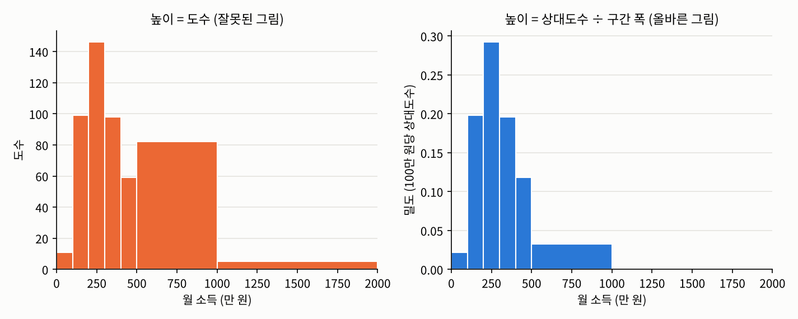
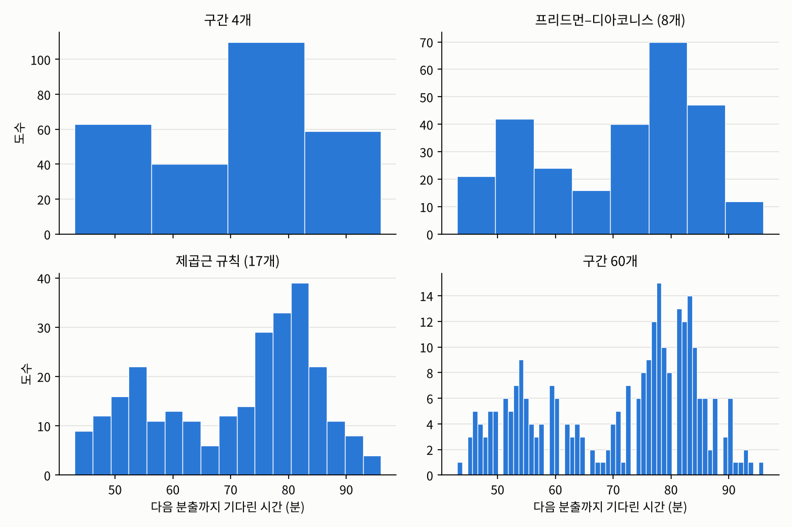
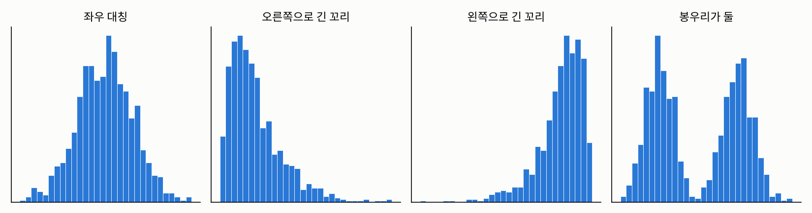
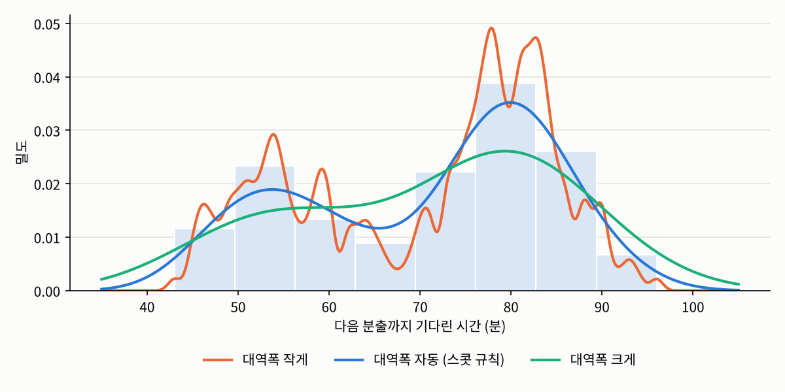

2.3 히스토그램과 분포의 모양
2장 데이터의 종류와 분포 보기 · 구간으로 묶어 세기
들어가며
지난 글에서는 각 값이 몇 번 나왔는지 세어 도수분포표와 막대그래프를 만들었습니다. 이 방법은 스팸 문자 수처럼 값의 종류가 몇 가지 안 될 때 잘 작동합니다.
그런데 연속형 데이터에서는 문제가 생깁니다. 이번 글에서는 값을 구간으로 묶어서 세는 히스토그램을 정의하고, 막대의 높이를 정하는 올바른 방법, 구간의 개수를 정하는 방법, 히스토그램에서 읽어 낼 수 있는 분포의 여러 모양을 차례로 살펴봅니다. 마지막으로 히스토그램을 매끄러운 곡선으로 바꾼 커널 밀도 추정을 소개하겠습니다.
값마다 세면 생기는 문제
미국 옐로스톤 국립공원의 올드페이스풀(Old Faithful) 간헐천은 비교적 규칙적으로 물을 뿜어 올리는 것으로 유명합니다. 이 간헐천의 분출 272번에 대해 분출이 이어진 시간과 다음 분출까지 기다린 시간을 기록한 데이터가 있습니다.1 시본에서는 geyser라는 이름으로 불러올 수 있고, 그중 다음 분출까지 기다린 시간(분)을 보겠습니다.
대기 시간은 43분부터 96분까지 분 단위로 기록되어 있고, 272개 값 중 서로 다른 값이 51가지입니다. 값마다 막대를 세우면 막대가 51개이고 대부분 높이가 몇 안 되는, 들쭉날쭉한 그림이 나옵니다. 키나 몸무게처럼 더 정밀하게 잰 데이터라면 거의 모든 값이 한 번씩만 나와서 모든 막대의 높이가 1인, 아무 정보도 없는 그림이 됩니다.
해결 방법은 간단합니다. 값을 하나하나 세는 대신, 수직선을 몇 개의 구간으로 나누고 각 구간에 들어간 데이터를 셉니다.
계급과 히스토그램
여기서는 각 계급이 왼쪽 끝은 포함하고 오른쪽 끝은 포함하지 않도록 정했습니다. 경계에 걸린 값이 두 계급에 중복으로 세어지거나 아무 데도 세어지지 않는 일을 막기 위해서입니다. (마지막 계급은 가장 큰 값이 빠지지 않도록 오른쪽 끝을 포함시키기도 합니다.)
정의에서 가장 중요한 부분은 높이를 \(f_j / \Delta_j\)로 정한 것입니다. 그러면 \(j\)번째 직사각형의 넓이는
\[\text{높이} \times \text{폭} = \frac{f_j}{\Delta_j} \times \Delta_j = f_j\]
가 됩니다. 즉 히스토그램에서는 높이가 아니라 넓이가 상대도수를 나타냅니다. 그리고 정리 2.2.3과 같은 이유로 넓이를 모두 더하면 1이 됩니다. 이렇게 넓이로 비율을 나타낸 높이 \(f_j / \Delta_j\)를 밀도(density)라고 부릅니다.
모든 계급의 폭이 같다면 높이는 상대도수에 비례하므로, 세로축에 그냥 도수를 적어도 모양은 똑같습니다. 실제로 많은 히스토그램이 그렇게 그려집니다. 문제는 계급의 폭이 서로 다를 때입니다.
높이가 아니라 넓이입니다
가상의 월 소득 데이터 500개로 확인해 보겠습니다. 소득은 대부분 사람이 비슷한 범위에 몰려 있고 소수가 아주 높은 값을 갖기 때문에, 높은 소득 쪽은 계급을 넓게 잡는 일이 흔합니다. 아래에서는 500만 원까지는 100만 원 간격으로, 그 위로는 500만~1000만 원, 1000만~2000만 원으로 넓게 묶었습니다.
import numpy as np
rng = np.random.default_rng(1557)
income = np.round(rng.lognormal(mean=np.log(300), sigma=0.55, size=500)) # 가상의 월 소득 (만 원)
edges = np.array([0, 100, 200, 300, 400, 500, 1000, 2000])
counts, _ = np.histogram(income, bins=edges)
widths = np.diff(edges)
print("구간 폭 (만 원) :", widths)
print("도수 :", counts)
print("100만 원당 상대도수 :", np.round(counts / counts.sum() / (widths / 100), 4))구간 폭 (만 원) : [ 100 100 100 100 100 500 1000]
도수 : [ 11 99 146 98 59 82 5]
100만 원당 상대도수 : [0.022 0.198 0.292 0.196 0.118 0.0328 0.001 ]
500만~1000만 원 계급에는 82명이 들어 있습니다. 왼쪽 그림처럼 높이를 도수로 그리면, 이 계급의 막대는 높이 82에 폭이 다른 막대의 다섯 배나 되어서 그림에서 가장 넓은 면적을 차지합니다. 눈은 자연스럽게 넓이를 보기 때문에, 마치 500만~1000만 원 구간에 사람이 가장 많이 몰려 있는 것처럼 보입니다.
하지만 82명은 폭 500만 원에 걸쳐 흩어져 있습니다. 100만 원당으로 나누면 16.4명꼴로, 400만~500만 원 구간의 59명보다 훨씬 적습니다. 오른쪽 그림처럼 밀도로 그리면 이 사실이 그대로 드러나고, 소득 분포가 200만~300만 원 근처에 몰려 있고 오른쪽으로 길게 꼬리를 끄는 모양이라는 것도 정확히 보입니다.
그래서 계급의 폭이 다를 때는 반드시 밀도로 높이를 정해야 합니다. 폭이 같다면 도수로 그려도 되지만, 그때도 “넓이가 비율”이라는 원리는 그대로입니다.
계급은 몇 개로 나눌까요?
계급의 폭을 모두 같게 하더라도, 몇 개로 나눌지는 정해야 합니다. 간헐천 대기 시간을 서로 다른 개수의 계급으로 그려 보겠습니다.

계급이 4개뿐이면 너무 뭉뚱그려서 봉우리가 둘이라는 구조가 잘 보이지 않습니다. 반대로 60개로 쪼개면 계급마다 데이터가 몇 개밖에 없어서 우연한 들쭉날쭉함이 모양을 덮어 버립니다. 계급이 너무 적으면 정보를 잃고, 너무 많으면 우연이 만든 잡음까지 보이는 셈입니다. 1.1에서 데이터가 적으면 우연이 규칙을 가린다고 했던 것과 같은 이야기입니다.
정답은 없지만, 출발점으로 쓸 수 있는 경험 규칙들이 있습니다. \(n\)이 데이터의 개수일 때,
- 제곱근 규칙: 계급 수를 \(\lceil \sqrt{n}\, \rceil\) 정도로 잡습니다.
- 스터지스 규칙(Sturges’ rule): 계급 수를 \(\lceil \log_2 n + 1 \rceil\)로 잡습니다.2
- 프리드먼–디아코니스 규칙(Freedman–Diaconis rule): 계급 폭을 \(2 \cdot \mathrm{IQR} \cdot n^{-1/3}\)로 잡습니다. 여기서 IQR은 데이터의 가운데 50%가 차지하는 폭으로, 2.5에서 정의합니다.3
여기서 \(\lceil \cdot \rceil\)은 올림을 뜻합니다. 간헐천 데이터에 적용해 보겠습니다.
import numpy as np
import seaborn as sns
waiting = sns.load_dataset("geyser")["waiting"].to_numpy()
n = waiting.size
print("n =", n)
print("제곱근 규칙 :", int(np.ceil(np.sqrt(n))))
print("스터지스 규칙 :", int(np.ceil(np.log2(n) + 1)))
q1, q3 = np.quantile(waiting, [0.25, 0.75])
h = 2 * (q3 - q1) / n ** (1 / 3)
print(f"프리드먼–디아코니스: 폭 {h:.2f}분, 구간", int(np.ceil((waiting.max() - waiting.min()) / h)), "개")n = 272
제곱근 규칙 : 17
스터지스 규칙 : 10
프리드먼–디아코니스: 폭 7.41분, 구간 8 개세 규칙이 8개에서 17개 사이를 제안하고, 위 그림에서 보았듯이 이 범위에서는 모두 봉우리가 둘인 구조가 잘 드러납니다. 스터지스 규칙은 데이터가 종 모양에 가깝다는 가정에서 나온 것이라 데이터가 많거나 모양이 복잡하면 계급이 너무 적게 나오는 경향이 있고, 프리드먼–디아코니스 규칙은 이상치에 덜 흔들리는 IQR을 써서 비교적 안정적입니다. 넘파이와 맷플롯립(matplotlib)에서는 bins="sqrt", bins="sturges", bins="fd"처럼 이름으로 지정할 수 있습니다.
어떤 규칙을 쓰든, 계급 수를 몇 가지로 바꿔 가며 그려 보고 모양이 크게 바뀌지 않는지 확인하는 습관이 가장 중요합니다. 계급을 조금 바꿨을 뿐인데 사라지는 봉우리라면 우연이 만든 것일 가능성이 높습니다.
분포의 모양
히스토그램을 그리는 가장 큰 목적은 분포의 모양을 보는 것입니다. 자주 만나는 모양에는 이름이 붙어 있습니다.

- 좌우 대칭(symmetric): 가운데를 중심으로 양쪽이 거울처럼 비슷합니다. 같은 종, 같은 성별인 동물의 키나 몸길이, 측정 오차 등이 이런 모양에 가깝습니다.
- 오른쪽으로 긴 꼬리(right-skewed): 대부분의 값이 작은 쪽에 몰려 있고, 큰 쪽으로 드물게 아주 큰 값이 있습니다. 소득, 집값, 병원 대기 시간처럼 0 아래로는 내려갈 수 없지만 위로는 제한이 없는 양에서 흔합니다. 앞의 소득 데이터가 그 예입니다. 양의 방향으로 치우쳤다고 해서 양의 왜도(positive skew)를 가진다고도 합니다.
- 왼쪽으로 긴 꼬리(left-skewed): 반대로 대부분이 큰 쪽에 몰려 있고, 작은 쪽으로 꼬리가 늘어집니다. 아주 쉬운 시험의 점수가 대표적입니다. 대부분 만점 근처이고 몇 명만 낮은 점수를 받습니다.
- 봉우리가 여럿(multimodal): 봉우리가 둘 이상입니다. 성질이 다른 두 무리가 한 데이터에 섞여 있을 때 자주 나타납니다.
간헐천 대기 시간은 봉우리가 둘인 대표적인 예입니다. 실제로 이 데이터에는 각 분출이 짧았는지 길었는지(kind)가 함께 기록되어 있는데, 짧은 분출 100번의 평균 대기 시간은 약 55분, 긴 분출 172번의 평균 대기 시간은 약 80분입니다. 두 봉우리가 서로 다른 두 무리에서 온 것입니다. 이런 데이터에서 전체 평균 약 71분을 “대표값”이라고 말하면, 실제로는 거의 일어나지 않는 대기 시간을 대표값으로 내세우는 셈이 됩니다. 히스토그램을 먼저 보지 않고 평균부터 계산하면 이런 함정에 빠지기 쉽습니다.
모양을 숫자로 나타내는 방법(왜도와 첨도)은 3장에서 다룹니다.
히스토그램을 매끄럽게: 커널 밀도 추정
히스토그램은 계급을 어디서 끊느냐에 따라 모양이 바뀌고, 막대 경계에서 갑자기 높이가 뛰는 계단 모양이라는 약점이 있습니다. 이를 보완하는 방법이 커널 밀도 추정(kernel density estimation)입니다.4
아이디어는 이렇습니다. 히스토그램은 각 데이터를 “자기가 속한 계급”이라는 고정된 칸에 넣어 쌓습니다. 커널 밀도 추정은 칸을 미리 정하지 않고, 각 데이터 위치에 작은 언덕을 하나씩 쌓은 뒤 모두 더합니다. 데이터가 많이 모인 곳에서는 언덕이 겹쳐 높아지고, 데이터가 드문 곳은 낮아집니다.
여기서 커널 \(K\)는 0을 중심으로 좌우 대칭인 종 모양 언덕이고, 아래 넓이가 1입니다. (\(K\)는 5장에서 다룰 표준정규분포의 밀도함수인데, 지금은 “넓이가 1인 종 모양 언덕”이라고만 생각하면 충분합니다.) \(K((t - x_i)/h)/h\)는 이 언덕을 \(x_i\) 위치로 옮기고 폭을 \(h\)배로 넓힌 것이고, 넓이는 여전히 1입니다. 이것을 \(n\)개 모두 더해 \(n\)으로 나누었으니, \(\hat{f}_h\) 아래의 전체 넓이는 히스토그램과 마찬가지로 1입니다.
히스토그램에서 계급의 개수가 중요했던 것처럼, 커널 밀도 추정에서는 대역폭 \(h\)가 중요합니다. 간헐천 데이터로 세 가지 대역폭을 비교해 보겠습니다. 사이파이(SciPy)의 gaussian_kde는 데이터의 표준편차에 곱할 배율로 대역폭을 정하고, 기본값으로는 스콧 규칙(Scott’s rule)이라는 경험 규칙을 씁니다.
import numpy as np
import seaborn as sns
from scipy.stats import gaussian_kde
waiting = sns.load_dataset("geyser")["waiting"].to_numpy()
for bw in [0.05, "scott", 0.6]:
kde = gaussian_kde(waiting, bw_method=bw)
h = kde.factor * waiting.std(ddof=1) # 실제 대역폭 (분)
print(f"bw_method={bw!s:>5}: 대역폭 h = {h:.2f}분, f(55) = {kde(55)[0]:.4f}, f(80) = {kde(80)[0]:.4f}")bw_method= 0.05: 대역폭 h = 0.68분, f(55) = 0.0227, f(80) = 0.0349
bw_method=scott: 대역폭 h = 4.43분, f(55) = 0.0187, f(80) = 0.0352
bw_method= 0.6: 대역폭 h = 8.16분, f(55) = 0.0153, f(80) = 0.0261
대역폭이 너무 작으면(주황, 약 0.7분) 언덕 하나하나가 좁고 뾰족해서 곡선이 데이터의 우연한 들쭉날쭉함까지 그대로 따라갑니다. 너무 크면(초록, 약 8분) 언덕이 넓게 퍼져서 두 봉우리가 뭉개지고, 55분 쪽 봉우리는 거의 사라집니다. 스콧 규칙으로 정한 대역폭(파랑, 약 4.4분)에서는 두 봉우리가 매끄럽게 드러납니다. 히스토그램의 계급 수와 똑같은 균형 문제입니다.
커널 밀도 추정 곡선은 이름 그대로 무언가의 “추정”입니다. 무엇을 추정하는지는 5장에서 확률밀도함수를 정의하면 분명해집니다. 지금은 히스토그램의 매끄러운 버전으로 이해해 두시면 충분합니다.
정리
이번 글에서는 연속형 데이터의 분포를 보는 방법을 다루었습니다.
- 값의 종류가 많은 데이터는 수직선을 계급으로 나누어 세고, 이를 히스토그램으로 그립니다.
- 히스토그램에서는 넓이가 상대도수를 나타내도록 높이를 \(f_j / \Delta_j\), 즉 밀도로 정합니다. 계급 폭이 다르면 반드시 밀도로 그려야 합니다.
- 계급 수는 제곱근 규칙, 스터지스 규칙, 프리드먼–디아코니스 규칙 등을 출발점으로 정하고, 여러 개로 바꿔 그려 모양이 안정적인지 확인합니다.
- 히스토그램에서 대칭, 오른쪽/왼쪽으로 긴 꼬리, 봉우리의 수 같은 분포의 모양을 읽을 수 있습니다. 봉우리가 둘이면 성질이 다른 무리가 섞여 있을 가능성을 의심해 봅니다.
- 커널 밀도 추정은 각 데이터 위에 언덕을 쌓아 히스토그램을 매끄럽게 만든 것이며, 대역폭이 계급 수와 같은 역할을 합니다.
히스토그램과 커널 밀도 추정은 분포의 모양을 보기에 좋지만, 둘 다 계급이나 대역폭을 우리가 정해야 하고, 그 선택에 따라 그림이 달라집니다. 데이터를 하나도 버리지 않고, 아무것도 정하지 않고 분포 전체를 그대로 담는 방법은 없을까요? 다음 글에서는 2.2의 누적상대도수를 실수 전체로 넓힌 경험적 분포함수를 다루겠습니다.
연결되는 개념
- \(\leftarrow\) 이전 개념: 2.2 도수분포표와 막대그래프
- \(\rightarrow\) 다음 개념: 2.4 경험적 분포함수
Footnotes
이 데이터는 R의 기본 데이터셋
faithful과 같은 자료로, R 문서는 그 출처를 W. Härdle, Smoothing Techniques: With Implementation in S, Springer, 1991로 밝히고 있습니다. 같은 간헐천의 더 완전한 기록은 A. Azzalini & A. W. Bowman, “A Look at Some Data on the Old Faithful Geyser”, Applied Statistics 39(3), 1990, pp. 357–365에서 분석되었습니다.↩︎H. A. Sturges, “The Choice of a Class Interval”, Journal of the American Statistical Association 21(153), 1926, pp. 65–66.↩︎
D. Freedman & P. Diaconis, “On the Histogram as a Density Estimator: \(L_2\) Theory”, Zeitschrift für Wahrscheinlichkeitstheorie und verwandte Gebiete 57(4), 1981, pp. 453–476.↩︎
커널 밀도 추정의 출발점이 된 논문은 M. Rosenblatt, “Remarks on Some Nonparametric Estimates of a Density Function”, The Annals of Mathematical Statistics 27(3), 1956, pp. 832–837과 E. Parzen, “On Estimation of a Probability Density Function and Mode”, The Annals of Mathematical Statistics 33(3), 1962, pp. 1065–1076입니다.↩︎